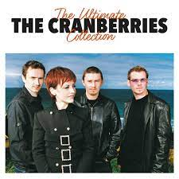

The Cranberries
The Cranberries foi uma banda de rock formada em Limerick, Irlanda, em 1989.
Um Pouco da História
The Cranberries foi uma banda de rock formada em Limerick,
Irlanda, em 1989. Originalmente chamada de Cranberry Saw Us,
a banda foi formada em 1989 pelo vocalista Niall Quinn,
guitarrista Noel Hogan, baixista Mike Hogan e baterista Fergal
Lawler.
Quinn foi substituído como vocalista principal por Dolores
O'Riordan em 1990, e eles mudaram seu nome para The Cranberries.
Embora amplamente associado com o rock alternativo, o som da
banda também incorpora indie pop, post-punk, folk e elementos
de dream pop.
The Cranberries ganhou fama internacional nos anos 1990 com seu
álbum de estreia, Everybody Else Is Doing It, So Why Can't We?,
que se tornou um sucesso comercial após ganhar atenção da mídia
nos Estados Unidos. Foi uma das bandas de rock mais bem sucedidas
dos anos 1990, a banda vendeu mais de 40 milhões de cópias em todo
o mundo.
A banda alcançou quatro top 20 álbuns na Billboard 200 (Everybody
Else Is Doing It, So Why Can't We?, No Need to Argue, To the
Faithful Departed e Bury the Hatchet) e oito top 20 singles na
Modern Rock Tracks ("Linger", "Dreams", "Zombie", "Ode to My Family",
"Ridiculous Thoughts", "Salvation", "Free to Decide" e "Promises").
No início de 2010, após um hiato de seis anos, o Cranberries se reuniu
e começou uma turnê norte-americana, seguida por shows na América Latina
e Europa. Em abril e maio de 2011, gravou seu sexto álbum de estúdio,
Roses, lançado em fevereiro de 2012. Após o lançamento de Roses, a banda
entrou em uma nova turnê, a qual passou pela Ásia e Oceania.
Em 15 de Janeiro de 2018 a vocalista da banda, Dolores O'Riordan falece
em Londres, onde se encontrava para uma breve sessão de gravação.
Origens
Noel e Mike Hogan, dois irmãos de Limerick, criaram a banda em 1989 e poucos meses depois, Fergal Lawler entra para o projeto cujo nome original era The Cranberry Saw Us, o saw us fazendo um trocadilho com sauce, molho em inglês (vale lembrar que cranberry é uma fruta típica da ilha irlandesa, no Brasil essa fruta é conhecida como oxicoco). Dolores O'Riordan fez o teste e ganhou o papel de vocalista principal, compondo a letra de "Linger". Sua voz é um elemento importante da sonoridade da banda. Sua fita demo feita em casa teve bom resultado localmente e a banda logo gravou uma fita demo que ganhou muito interesse popular e da crítica. Após uma variedade de ofertas de gravadoras, decidiram assinar com a Island Records. Após um single inicial de pouco sucesso, abandonaram seu empresário. Seu segundo single, "Linger", e seu álbum de estreia, Everybody Else Is Doing It, So Why Can't We?, tornaram-se um grande sucesso nos Estados Unidos e logo depois no Reino Unido. O single "Dreams" também tornou-se um sucesso, alcançando a 14ª posição nas paradas dos EUA
Metade da década de 1990
Em 1994, O'Riordan casou-se com Don Burton, o gerente de turnê da banda. A posição de O'Riordan como líder da banda estava causando tensões dentro do grupo enquanto gravavam No Need to Argue, outro álbum de sucesso que incluía "Zombie", um protesto sobre a violência entre extremistas protestantes e católicos na Irlanda do Norte na época do conflito norte-irlandês. O álbum trouxe à banda imensa popularidade na Europa e Estados Unidos. No meio de boatos sobre a iminente saída de O'Riordan da banda, o álbum To the Faithful Departed foi lançado, que vendeu bem apesar da crítica não ter gostado e também não atingiu o mesmo sucesso do álbum anterior. Nos próximos anos, a banda cancelou uma grande turnê programada e boatos de uma separação surgiram novamente. Eles lançaram Bury the Hatchet, com opiniões variadas da crítica, em 1999. Em 2001, lançaram Wake Up and Smell the Coffee recebendo opiniões como "a magia está de volta". O álbum estreou na 46ª posição nas paradas dos EUA. A banda parecia estar de volta. Uma coletânea de grandes sucessos, Stars - The Best of 1992-2002 foi lançada em 2002, junto de um DVD com os videoclipes da banda.
Pausa
No entanto, em 2003 a banda anunciou que iria tomar algum tempo para suas carreiras individuais. Mais cedo naquele ano, O'Riordan tinha cantado a canção principal do filme A Paixão de Cristo, "Ave Maria", e tinha até composto uma canção para o filme Evilenko. O novo projeto de Noel Hogan é Mono Band. Em maio de 2007 foi lançado o álbum Are You Listening?, escrito integralmente por Dolores O'Riordan. As doze faixas são descritas por Dolores como um registro de suas experiências nos últimos anos, um diário íntimo transformado em canções. Após a turnê de Dolores O'Riordan pelo mundo ao longo de sete meses e das novas produções da banda Arkitekt (Noel Hogan), o antigo produtor do The Cranberries, Stephen Street, decidiu lançar um álbum com músicas gravadas durante o ano de 2003 para o sétimo álbum do grupo, fato que não ocorreu devido a pausa dos integrantes no mesmo ano. O próximo álbum então foi colocado em espera, após doze anos de turnês e promoção, com a venda total de álbuns da banda excedendo 42 milhões.
Retorno
Em 27 de fevereiro de 2012, após 10 anos sem nenhum trabalho lançado, a banda lança Roses, seu sexto trabalho de estúdio,[6] pela Downtown Records/ Cooking Vinyl nos Estados Unidos e em Cooking Vinyl mundial. O álbum foi produzido por Stephen Street e gravado em maio de 2011 em Toronto e Londres. O primeiro single do álbum foi "Tomorrow". Em 28 de abril de 2017, após uma pausa de 5 anos, a banda lança a coletânea Something Else. Registrando dez dos maiores sucessos da banda em formato acústico, com a participação da Orquestra de Câmara Irlandesa. Foram 13 faixas gravadas no estúdio na Universidade de Limerick, cidade-natal dos Cranberries, sendo 3 faixas inéditas
Morte de O'Riordan
Na 15 de janeiro de 2018, a vocalista Dolores O'Riordan faleceu aos 46 anos em Londres. A banda estava na cidade para gravações em estúdio, quando faria o vocal de uma versão da conhecida música "Zombie", interpretada pela banda de rock americana Bad Wolves. Um jornal irlandês apurou que a polícia foi chamada ao hotel em que se encontrava Dolores. O futuro da banda passou a ser incerto, sem sua vocalista. Dolores O'Riordan morreu afogada em uma banheira após intoxicação alcoólica, segundo o laudo divulgado na quinta-feira (6) após o ocorrido. Neste laudo foi informado que havia no sangue de Dolores 330 mg de álcool para cada 100 ml de sangue e que a causa da morte era considerada acidental. A morte de Dolores causou grande comoção na Irlanda, onde a cantora é lembrada como "voz de toda uma geração" e um ícone mundial da música nos anos 1990. O laudo final apontou overdose de fentanil como a causa da morte.
Álbum póstumo e fim da banda
Em 15 de janeiro de 2019, um ano após a morte de Dolores O'Riordan, os integrantes remanescentes da banda comunicaram o lançamento de um álbum gravado no final de 2017, com as últimas canções registradas por Dolores junto dos membros do Cranberries. Intitulado In The End, o álbum possui 11 faixas e suas canções foram compostas por Dolores e Noel Hogan durante a turnê da banda, iniciada em maio de 2017. In The End foi lançado em 26 de abril de 2019, marcando assim o fim definitivo do Cranberries.